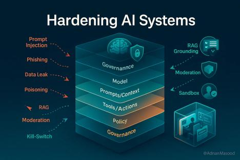

6 Del prompt al pipeline: cómo la IA generativa reescribe la ingeniería en sistemas
Palabras clave
IA generativa, transformación digital, sistemas inteligentes, automatización
6.1 Introducción
La transformación digital ya no es una meta futura, sino una realidad que redefine continuamente cómo los sistemas procesan y conectan información. En este escenario, la inteligencia artificial generativa (IAG) se posiciona como una de las tecnologías más disruptivas, capaz de producir texto, código e imágenes a partir de instrucciones en lenguaje natural e integrarse en plataformas digitales.
Para la Ingeniería en Sistemas, su impacto es directo: transforma el análisis de requerimientos, el diseño de arquitecturas, la programación y la documentación. Este artículo examina, desde una perspectiva latinoamericana, los beneficios medibles de la IAG en el ciclo de vida del software y los riesgos que requieren una respuesta técnica responsable.
6.2 Artículo
De la lógica determinista al componente probabilístico
Durante décadas, construir sistemas implicó codificar reglas para cada estado posible. La IAG introduce un bloque funcional distinto que produce salidas abiertas e interpreta datos de forma autónoma. Esta diferencia de naturaleza obliga a repensar la arquitectura incorporando capas de control, trazabilidad y validación que antes eran opcionales en el diseño tradicional.
Un reencuadre valioso es considerar al modelo como un conector que facilita la comunicación y conversión entre diversos módulos. Por ejemplo, en sistemas de soporte, la IAG puede inferir intenciones y redactar respuestas, pero su confiabilidad depende totalmente de validadores y auditorías. Ese entorno técnico, la ingeniería que encierra al modelo, es donde la labor profesional vuelve a ser fundamental.
Impacto en el ciclo de vida del software
La IA generativa está transformando el SDLC, permitiendo que tareas específicas de codificación se completen hasta un 55% más rápido y mejorando la detección de fallos en requerimientos y pruebas. Sin embargo, en el panorama global de la ingeniería, la ganancia real de productividad es más moderada (entre el 10% y el 18%). Esta diferencia confirma que la IA no es un atajo mágico, sino una herramienta cuyo éxito depende de la supervisión humana y de una ingeniería deliberada dentro de procesos maduros.
| Dimensión | Enfoque tradicional | Con IAG integrada |
|---|---|---|
| Interfaz de usuario | Formularios y menús con reglas fijas | Conversación en lenguaje natural con controles |
| Arquitectura | Servicios + reglas; ML puntual y aislado | Modelo como conector + guardrails + monitoreo |
| Gestión del conocimiento | Documentación estática; búsquedas exactas | RAG: recuperación interna + generación contextual |
| Codificación | Escritura manual línea a línea | Asistida; generación de bloques funcionales (~55 % más rápido) |
| QA y pruebas | Casos manuales; scripts tradicionales | Síntesis automática de pruebas; cobertura >30 % |
| Riesgos principales | Bugs, rendimiento, seguridad clásica | Confabulación, fuga de datos, prompt injection, sesgos |
Tabla 1: Comparativa del enfoque tradicional vs. enfoque con IA (elaboración propia).
Arquitecturas modernas: RAG, agentes y la capa de control
El patrón de generación aumentada por recuperación (RAG) ha ganado tracción al desplazar el foco del conocimiento del modelo hacia la arquitectura que lo rodea. Para un ingeniero, esto implica un reto de gestión de datos: desde el diseño de índices vectoriales hasta el control de permisos, pues la confiabilidad del sistema depende de la calidad de sus fuentes internas y no solo de la capacidad del modelo.
A nivel de infraestructura, el futuro apunta hacia agentes autónomos y microservicios orquestados por lenguaje natural. En el contexto de Guatemala, donde la dependencia tecnológica es alta, este avance exige buscar soberanía tecnológica. La clave no es solo consumir herramientas externas, sino fomentar la investigación en modelos de código abierto y arquitecturas híbridas que permitan una auditoría local y una gobernanza real sobre los datos.
Para ilustrar las capas de seguridad y gobernanza necesarias en estas arquitecturas, la Figura 1 detalla el proceso de endurecimiento de sistemas con IAG.

Figura 1: Diagrama de flujo de arquitectura de sistema con IAG. Fuente: Masood (2025).
6.3 Conclusiones
La IA generativa está redefiniendo la ingeniería de sistemas al optimizar el ciclo de vida del software, aunque su implementación introduce desafíos críticos como la confabulación y la vulnerabilidad de los datos. Para que su integración sea exitosa, debe dejar de verse como un complemento superficial y adoptarse como un subsistema robusto, apoyado en patrones como RAG, trazabilidad estricta y supervisión humana constante. En el ámbito profesional y académico, particularmente frente a los retos de soberanía tecnológica en Latinoamérica, es indispensable establecer límites claros de autonomía y certificar nuevas competencias en gobernanza y auditoría. El éxito de esta transición radica en una ingeniería deliberada y el diseño de arquitecturas auditables que aseguren la calidad técnica sin desplazar el criterio analítico del ingeniero.
6.4 Bibliografía
National Institute of Standards and Technology (NIST). “Artificial Intelligence Risk Management Framework: Generative Artificial Intelligence Profile (NIST AI 600-1)”. Gaithersburg, MD: NIST (2024).
Bourdon, J., I. Ozkaya, y R. Nord. “Generative AI for Software Architecture: Applications, Challenges, and Future Directions”. arXiv preprint arXiv:2503.13310v2 (2025).
Chui, Michael, et al. “The State of AI in 2023: Generative AI’s Breakout Year.” McKinsey Global Institute, 2023.